1. HPVと関係する病気
HPVは男女ともに感染する可能性がある一般的なウイルスです。多くは自然に排除されますが、一部で感染が長く続くと、子宮頸がんのほか、肛門がん、陰茎がん、中咽頭がん、尖圭コンジローマなどに関係することがあります。
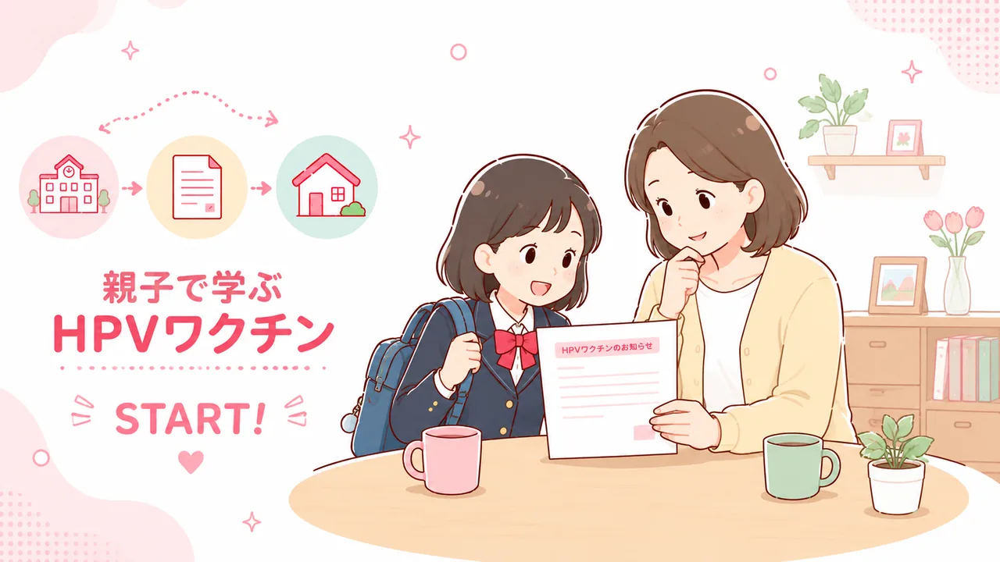
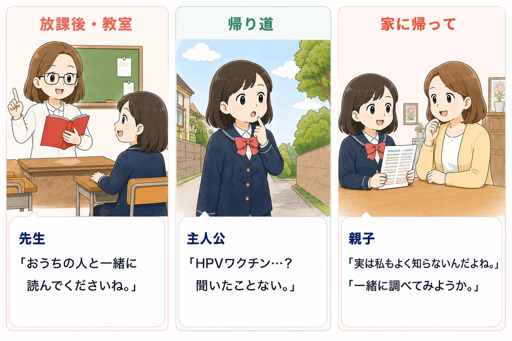
知らないことを、すぐに決めなくて大丈夫。まずはHPVとHPVワクチンについて知るところから始めましょう。
知らないことを、すぐ決めつけない。
まず親子で一緒に知るところから始めます。
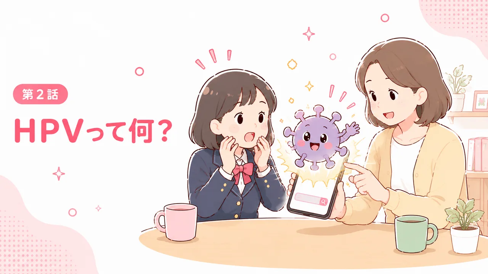
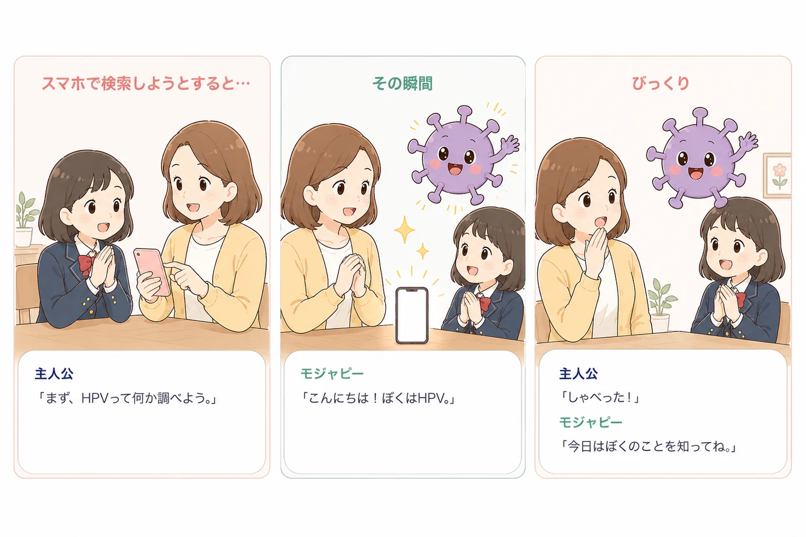
感染しても、多くは免疫の力で自然に排除されます。感染したこと自体で、誰かを責めるものではありません。
男女を問わず、約80％の人が
一生に一度は感染するといわれています。
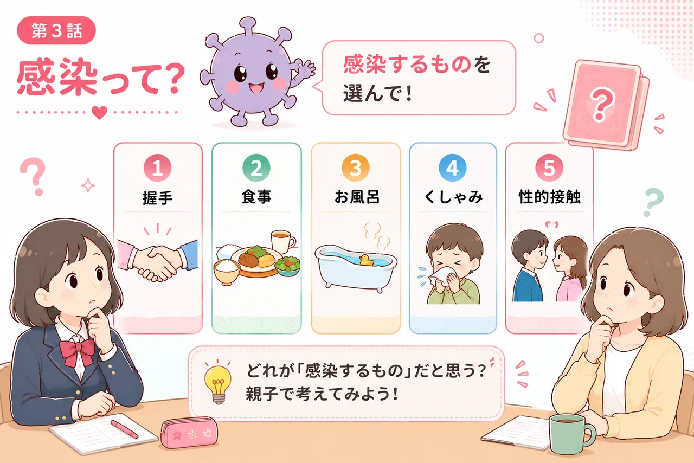
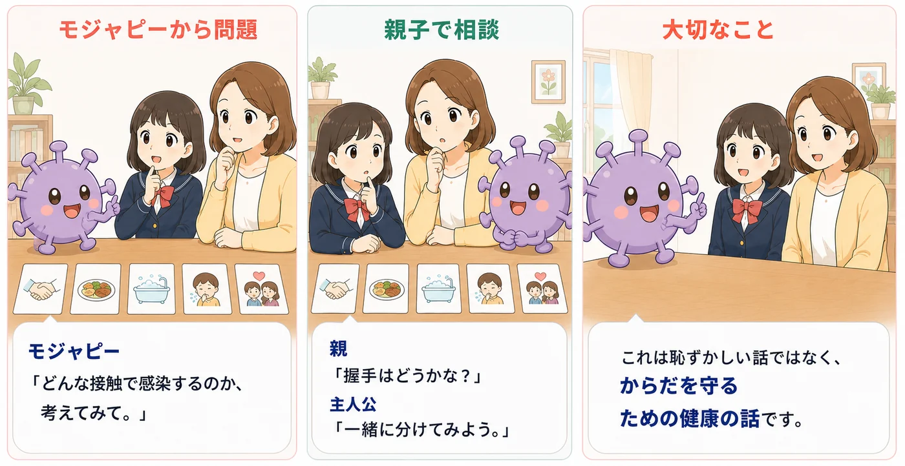
握手、食事、お風呂、くしゃみなど、日常生活の接触で感染するものではありません。恥ずかしい話ではなく、からだを守るための健康の話です。
親子で相談しながら分けてみましょう。
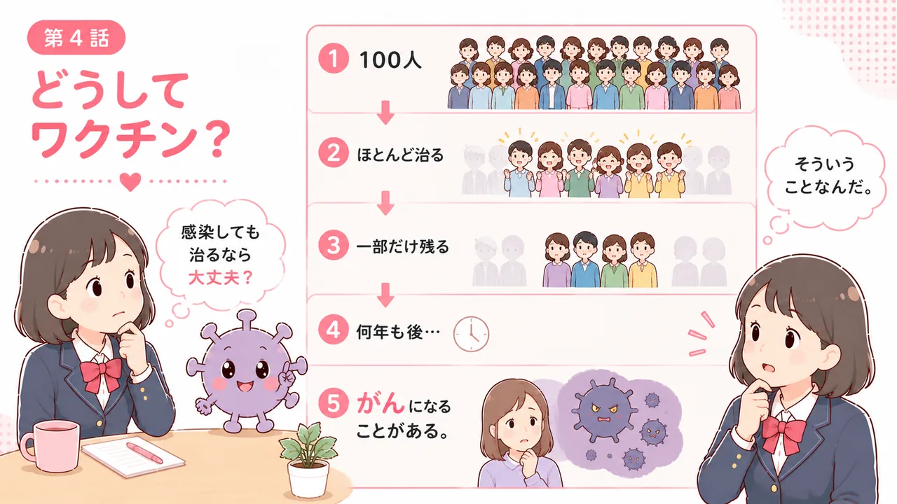
多くは自然に排除されますが、一部では感染が長く続き、数年から数十年かけて細胞が変化して、がんになることがあります。
不安をあおらず、何が起こるのかを順番に確認します。
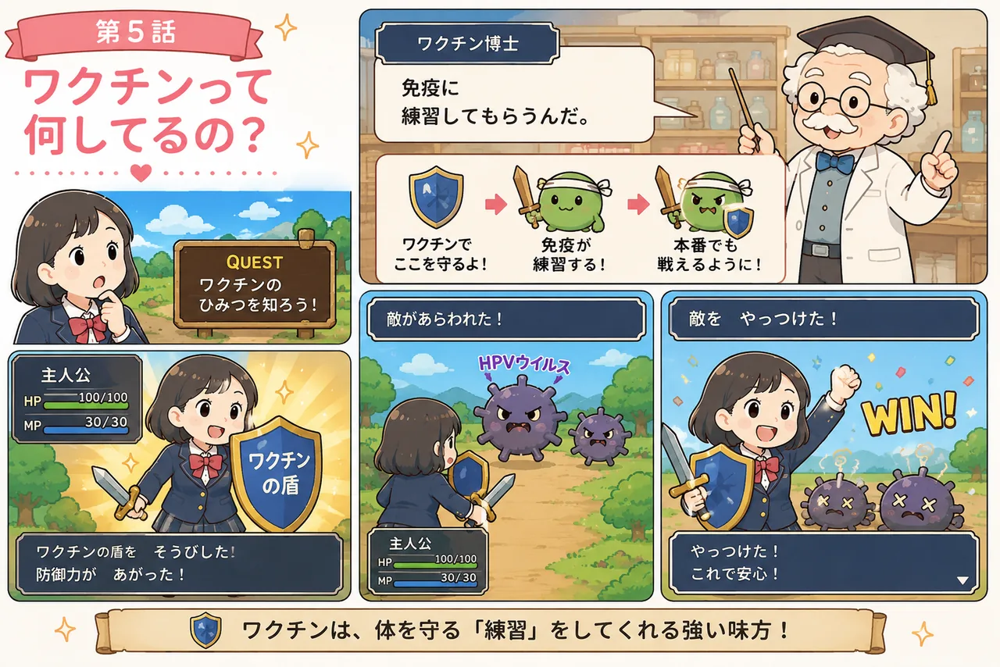
すべてのHPV感染を防げるわけではなく、すでにある感染を治療する薬でもありません。
漫画の「戦い」は免疫の働きを分かりやすく表したイメージです。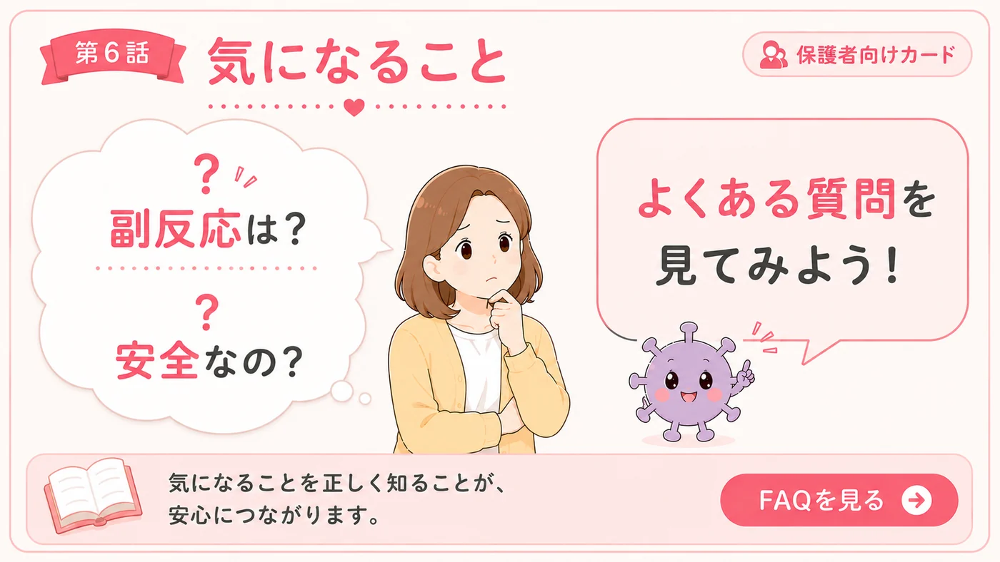
接種した場所の痛みや腫れ、頭痛、発熱などが起こることがあります。まれに重い症状も報告されています。気になる症状は我慢せず医療機関へ相談してください。
接種は強制ではありません。効果とリスクの両方を知り、ご本人と一緒に考えることが大切です。
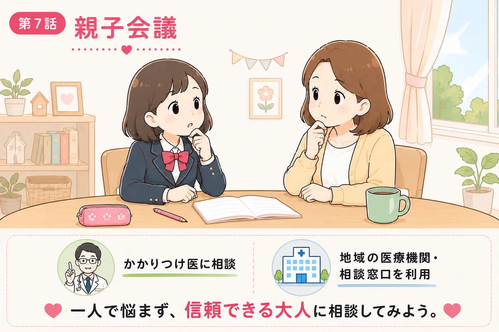
親子で思ったことを声に出して話してみましょう。その場で結論を出さなくても大丈夫です。
わからないことは相談しましょう。
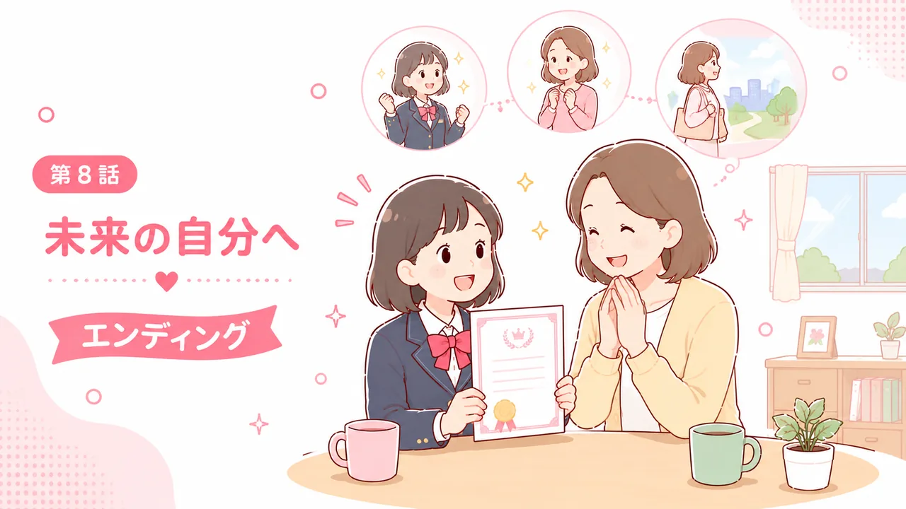
今日すぐに結論を出す必要はありません。分からないことは相談し、必要ならまた親子で話しましょう。
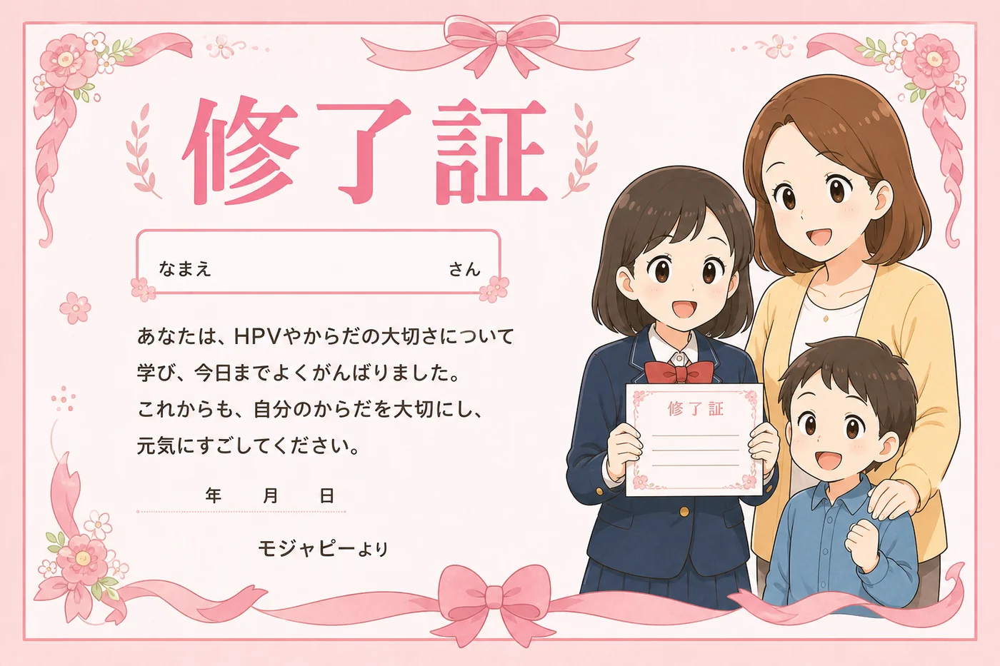
この画像は接種の証明ではなく、親子で学んだことを記念する修了証です。
HPVワクチンの効果、限界、接種方法、接種後の症状、相談先を詳しく確認できます。本編の進捗には含まれません。
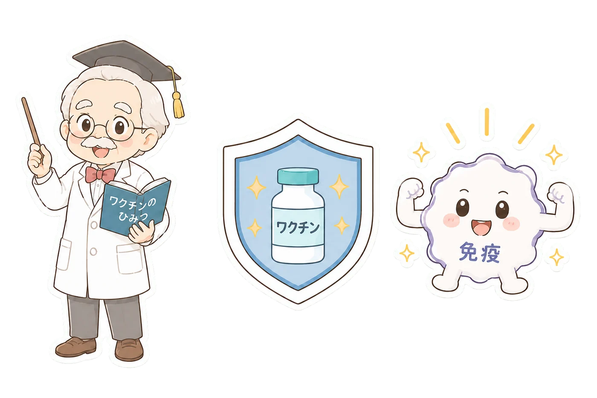
HPVは男女ともに感染する可能性がある一般的なウイルスです。多くは自然に排除されますが、一部で感染が長く続くと、子宮頸がんのほか、肛門がん、陰茎がん、中咽頭がん、尖圭コンジローマなどに関係することがあります。
9価HPVワクチンは、子宮頸がんの原因の80～90％を占める7種類のHPV感染を予防します。ただし、すべての高リスク型を防ぐものではなく、すでに感染したHPVを排除・治療するものでもありません。
ワクチンを接種していても、20歳になったら定期的な子宮頸がん検診を受けることが大切です。
日本の定期接種は小学校6年～高校1年相当の女子が対象です。2026年4月から公費の定期接種は9価ワクチンです。
接種場所や費用、実施方法は自治体へご確認ください。
9価ワクチンでは、接種部位の痛みが50％以上、腫れ・赤み・頭痛などが10～50％未満とされています。発熱、疲労、めまい、吐き気などが起こることもあります。注射への緊張や痛みをきっかけに失神することがあるため、接種後は座って様子を見ます。
まれに重い症状も報告されています。気になる症状や体調変化があれば、我慢せず接種した医療機関などへ相談してください。
ワクチンの開発時には国内外の臨床試験が審査され、接種開始後も副反応が疑われる事例が収集されています。報告は因果関係を問わず集められ、専門家による分析・評価が継続されています。
「絶対に安全」と断定するのではなく、期待される効果と起こりうる症状の両方を知って判断することが大切です。
定期接種による健康被害が接種によるものと厚生労働大臣に認定された場合、予防接種健康被害救済制度による給付があります。申請は接種時に住民票があった市町村へ相談します。
接種は強制ではありません。本人と保護者が効果とリスクを理解したうえで決めます。
HPVワクチンが将来の妊娠に影響するという科学的根拠は確認されていません。個別の不安は医療機関へご相談ください。
男の子もHPVに感染します。男性への接種については、使用するワクチン、費用、自治体の助成制度などを医療機関や自治体へご確認ください。
必要です。ワクチンですべての高リスク型を防げるわけではありません。
厚生労働省「HPVワクチンに関するQ&A」↗
厚生労働省「HPVワクチンに関する情報提供資材」↗
国立がん研究センター「子宮頸がん」↗
厚生労働省「予防接種健康被害救済制度」↗
情報確認：2026年7月29日